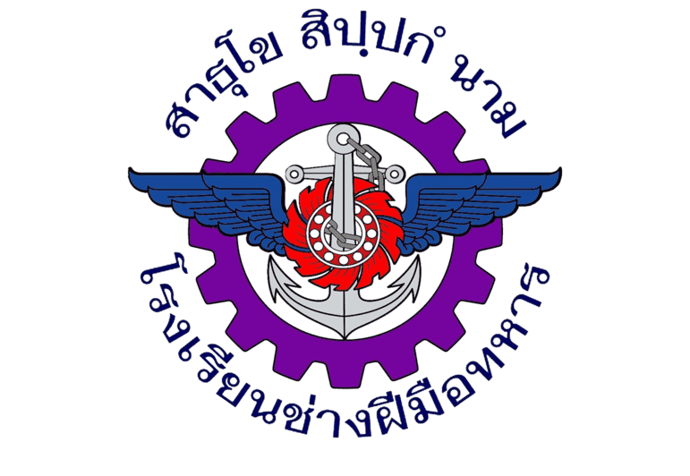

สวัสดีครับ, ผมชื่อเจ้านาย
"มุ่งมั่นพัฒนาระบบเครือข่ายและความมั่นคงปลอดภัยทางไซเบอร์"
ผมมีความสนใจด้านความปลอดภัยทางไซเบอร์ (Cyber Security) และเครือข่ายอินเทอร์เน็ต (Network Architecture) มีความมุ่งมั่นในการนำเทคโนโลยีและปัญญาประดิษฐ์ (AI) มาปรับใช้เพื่อยกระดับความปลอดภัยของเครือข่ายและระบบข้อมูลในองค์กร ทั้งในภาพรวมของการทำงาน และด้านการแข่งขัน Capture The Flag (CTF)
ฐิติวุฒิ คงสมศักดิ์ (เจ้านาย)
11 กันยายน พ.ศ. 2545 (อายุ 23 ปี)
thitiwut.k@rtarf.mi.th
061-836-1116
3/6307 พหลโยธิน 30 ถ.พหลโยธิน แขวงจันทรเกษม เขตจตุจักร กรุงเทพมหานคร 10900
คณะ: วิทยาศาสตร์ประยุกต์
สาขา: นวัตกรรมและเทคโนโลยีความมั่นคง
แขนง: ความมั่นคงปลอดภัยทางไซเบอร์

วิชาชีพช่าง: อิเล็กทรอนิกส์
ประสบการณ์และความเชี่ยวชาญในการปฏิบัติงานจริง
ควบคุมดูแลการแข่งขัน Cybersecurity ภายในโรงเรียนช่างฝีมือทหาร
ออกแบบและพัฒนาโจทย์การแข่งขัน Capture The Flag (CTF)
ออกแบบและวางระบบเครือข่ายสำหรับการแข่งขัน
สนับสนุนการแก้ไขปัญหาฮาร์ดแวร์และซอฟต์แวร์ ให้กับหน่วยงาน
ดูแลระบบเครือข่าย ติดตั้งอุปกรณ์ ประสานงานผู้ให้บริการอินเทอร์เน็ต
จัดการและอัปเดตข้อมูลบนเว็บไซต์ขององค์กรให้ทันสมัยอยู่เสมอ
ออกแบบและสร้างโจทย์การแข่งขัน CTF
ออกแบบ วางระบบ และบริหารจัดการเครือข่าย
ถ่ายทอดความรู้ เพื่อสร้างความตระหนักรู้ด้านความปลอดภัยทางไซเบอร์ในองค์กร
วิเคราะห์และแก้ไขปัญหาคอมพิวเตอร์
นำหลักการออกแบบ UI/UX มาปรับใช้ในการจัดทำโครงสร้างระบบออนไลน์
ภาษาอังกฤษ